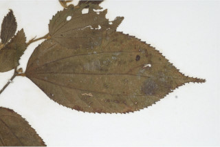
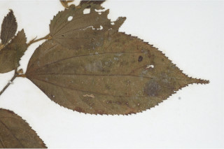

Trees up to 20 m tall.
20 ಮೀ. ಎತ್ತರದವರೆಗಿನ ಸಣ್ಣ ಮರಗಳು.
Trees up to 20 m tall.
மரங்கள் 20 மீ. உயரம் வரை வளரக்கூடியது.
Young branchlets terete, pubescent.
ಕಿರುಕೊಂಬೆಗಳು ದುಂಡಾಗಿದ್ದು, ಮೃದುತುಪ್ಪಳದಿಂದ ಕೂಡಿರುತ್ತವೆ.
Young branchlets terete, pubescent.
சிறியநுனிக்கிளைகள் குறுக்குவெட்டுத் தோற்றத்தில் வளையமானது, உரோமங்களுடையது.
Leaves simple, alternate, distichous; stipule lateral, pubescent, caducous and leaving scar; petiolue 0.3-1 cm long, planoconvex in cross section, pubescent; lamina 4-8.5 x 2.5-4.5, ovate -lanceolate or elliptic-oblong, apex caudate - acuminate, base asymmetric to obtuse or rounded, margin irregularly crenate-serrate, pubescent and stellately hairy at least on the nerves beneath; 3-5_nerved at base; midrib raised above; secondary_nerves 3 pairs; tertiary_nerves horizontally reticulo-percurrent.
ಎಲೆಗಳು ಸರಳವಾಗಿದ್ದು ಪರ್ಯಾಯ ಜೋಡನಾ ವ್ಯವಸ್ಥೆಯಲ್ಲಿದ್ದು, ಕಾಂಡದ ಎರಡೂ ಕಡೆ ಎದುರು ಬದರಿನ ಲಂಬ ಸಾಲಿನಲ್ಲಿರುತ್ತವೆ;ಕಾವಿನೆಲೆಗಳು ಪಾರ್ಶ್ವದಲ್ಲಿದ್ದು ಮೃದುತುಪ್ಪಳದಿಂದ ಕೂಡಿರುತ್ತವೆ,ಉದುರಿ ಹೋದ ನಂತರ ಗುರುತುಗಳನ್ನು ಉಳಿಸುತ್ತವೆ; ತೊಟ್ಟುಗಳು 0.3-1 ಸೆಂ.ಮೀ. ಉದ್ದವಿದ್ದು, ಅಡ್ಡ ಸೀಳಿದಾಗ ಸಪಾಟ ಪೀನ ಮಧ್ಯದ ಆಕಾರ ಹೊಂದಿರುತ್ತವೆ ಮತ್ತು ಮೃದುತುಪ್ಪಳದಿಂದ ಕೂಡಿರುತ್ತವೆ; ಪತ್ರಗಳು 4 – 8.5 X2.5-4.5 ಸೆಂ.ಮೀ. ಗಾತ್ರ, ಅಂಡ- ಭರ್ಜಿ ಅಥವಾ ಅಂಡವೃತ್ತ-ಚತುರಸ್ರದ ಆಕಾರ ಹೊಂದಿದ್ದು,ಬಾಲರೂಪಿ-ಕ್ರಮೇಣ ಚೂಪಾಗುವ ತುದಿ,ಅಸಮ್ಮಿತಿ ಮಾದರಿಯಿಂದ ಚೂಪಲ್ಲದ ಅಥವಾ ದುಂಡಾಗಿರುವವರೆಗಿನ ರೀತಿಯ ಬುಡ, ಅನಿಯತವಾಗಿ ದುಂಡೇಣು ದಂತಿತ - ಗರಗಸ ದಂತಿತವಾದ ಅಂಚು ಹೊಂದಿದ್ದು ಪತ್ರದ ತಳಭಾಗದ ನಾಳಗಳ ಮೇಲಾದರೂ ಮೃದುತುಪ್ಪಳ ಮತ್ತು ನಕ್ಷತ್ರ ರೂಪದ ರೋಮಗಳಿಂದ ಕೂಡಿರುತ್ತವೆ;ಪತ್ರಗಳ ಬುಡದಲ್ಲಿ 3-5 ನಾಳಗಳಿರುತ್ತವೆ;ಮಧ್ಯನಾಳ ಪತ್ರದ ಮೇಲ್ಭಾಗದಲ್ಲಿ ಮೇಲೆದ್ದಿರುತ್ತದೆ;ಎರಡನೇ ದರ್ಜೆಯ ನಾಳಗಳು 3 ಜೋಡಿಗಳಿರುತ್ತವೆ; ಮೂರನೇ ದರ್ಜೆಯ ನಾಳಗಳು ಲಂಬ ರೇಖೆಗೆ ಸಮಕೋನಲ್ಲಿದ್ದು ವಿಶಾಲ ಜಾಲಬಂಧ ನಾಳ ವಿನ್ಯಾಸದವುಗಳಾಗಿದ್ದು ಎಲೆಯ ದಿಂಡಿಗೆ ಅಡ್ಡವಾಗಿ ಕೂಡುವ ಮಾದರಿಯಲ್ಲಿರುತ್ತವೆ.
Leaves simple, alternate, distichous; stipule lateral, pubescent, caducous and leaving scar; petiolue 0.3-1 cm long, planoconvex in cross section, pubescent; lamina 4-8.5 x 2.5-4.5, ovate -lanceolate or elliptic-oblong, apex caudate - acuminate, base asymmetric to obtuse or rounded, margin irregularly crenate-serrate, pubescent and stellately hairy at least on the nerves beneath; 3-5_nerved at base; midrib raised above; secondary_nerves 3 pairs; tertiary_nerves horizontally reticulo-percurrent.
இலைகள் தனித்தவை, மாற்றுஅடுக்கமானவை, இருநெடுக்கு வரிசையிலையடுக்கம் (டைஸ்டிக்கஸ்); இலையடிச்செதில் பக்கவாட்டில் அமைந்தவை, உரோமங்களுடையது, எளிதில் உதிரக்கூடியது மற்றும் தழும்புகளை ஏற்படுத்துகின்றன; இலைக்காம்பு 0.3-1 செ.மீ. நீளமானது, குறுக்குவெட்டுத் தோற்றத்தில் பிளேனோகான்வக்ஸ், உரோமங்களுடையது; இலை அலகு 4-8.5 x 2.5-4.5, முட்டை-ஈட்டி வடிவானது அல்லது நீள்வட்டம்-நீள்சதுர வடிவானது, அலகின் நுனி வால்-அதிக்கூரியது, அலகின் தளம் சமமற்றது முதல் மெட்டையானது அல்லது வட்டமானது, அலகின் விளிம்பு ஒழுங்கற்ற பிறை போன்ற பற்களுடையது-ரம்ப பற்களுடையது, அலகின் கீழ்பரப்பு உரோமங்களுடையது மற்றும் அலகின் கீழ்பரப்பில் மையநரம்பு நட்சத்திர வடிவ உரோமங்களுடையது; தளத்திலே 3-5 நரம்புகளை உடையது; மையநரம்பு மேற்புறத்தில் அலகின் பரப்பைவிட உயர்ந்து இருக்கும்; இரண்டாம் நிலை நரம்புகள் 3 ஜோடிகள்; மூன்றாம் நிலை நரம்புகள் விளிம்பு நோக்கிய வலைப்பின்னல்-பெர்க்கரண்ட் போன்றவை.
Inflorescence axillary cymes; pedicel ca. 0.5 cm long.
ಪುಷ್ಪಮಂಜರಿಗಳು ಅಕ್ಷಾಕಂಕುಳಿನಲ್ಲಿನ ಮಧ್ಯಾರಂಭಿ ಮಾದರಿಯವು;ತೊಟ್ಟು ಅಂದಾಜು 0.5 ಸೆಂ.ಮೀ.ಉದ್ದವಿರುತ್ತದೆ.
Inflorescence axillary cymes; pedicel ca. 0.5 cm long.
மஞ்சரி இலைக்கோணங்களில் காணப்படுபவை சைம் வகை மஞ்சரி; மலர்காம்பு 0.5 செ.மீ. நீளமானது.
Drupe.
ಫಲಗಳು ಡ್ರೂಪ್ ಮಾದರಿಯವು.
Drupe.
உள்ளோட்டுத்தசைகனி (ட்ரூப்).
 
